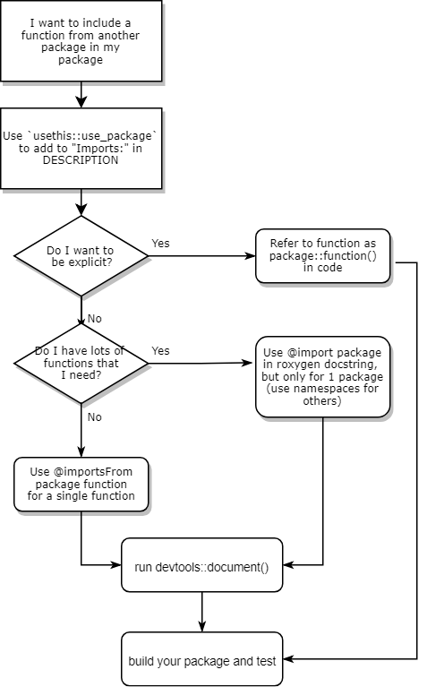

Articles (usually instructional) are listed here.
Understanding global cephalopod production.
Understanding wages for Registered Nurses.
Use your curiosity to connect with others in a meaningful way.
Learn about our assignment to teach the tidyverse to each other.
tidyverse
Getting Shiny, LearnR, and Mybinder.org to play together nicely.
Understanding crop production across the world.
Understanding Characters through Avatar Episode Scripts.
Understanding coffee production and consumption across the world.
Looking at the unique animal personalities in Animal Crossing.
Notes on the RStudio Instructor Training and certification exams.

DESCRIPTION
NAMESPACE
roxygen
devtools::document
Some thoughts the package building process and how devtools::document() is at the center of it..
devtools::document()
Some thoughts about impostor syndrome.
How do you incorporate tidyeval and shiny together?
Learn some more about the many uses of group_by()/summarize().
group_by()
summarize()
Our team-taught class introducing Neuroscience Graduate Program students to Python.
Learning about giant pumpkin contest winners.
Don’t panic. I’ll show you how to scrub your Git history and get rid of it.